Утром сразу после завтрака быстро апнули на 300 метров вверх и таким образом легко взяли перевал Наки Ла 4930 м (NakeeLa). Это первый перевал без ветра и с теплым солнцем.
Вот он, долгожданный спуск. Сначала пологие длинные витки петляющей дороги, а затем местная достопримечательность - серпантин Gota Loops, 22 витка в долина реки Царап Чу. Едем около 20 км с сильным встречным ветром. Тяжело.
Паша клеит 1, 5 часа колесо (камеру и покрышку), неудачно заштопанная покрышка протирает лайтовую камеру и дырки найти сложно.
Обедаем в местчке Sarchu после чего начинаем подъем в сторону Baralacha La. Очень сильный встречный ветер. Красивые ручьи и маленькие озера, на вершинах больше 4500м совсем рядом снег. Суслики на подъеме. Проблемы с животом у Вани, долго ждем, темнеет. Не понятно успеем ли на перевал засветло. Саша едет тяжело.
Красивый перевал Baralacha La 4990 м, последний наш высокий, больше таких в походе не будет. На перевале холодно, ветер, спускаемся в сумерках. Красивое озерцо Suruj в начале спуска. Кругом заснеженные вершины. Ночевка в Zing Zing Bar примерно на 4300 м в гостинице-шатре. Хозяин отеля из Дели. Первый раз попробовали местный ром (и вообще спиртное за поход) Ром замечательный.
Ночью за бортом холодно.
Computer (Length/Duration/Average Speed): 99.4/7.37/13
GPS (Length/Vertical Up/Vertical Down): 85.8/1320/1766
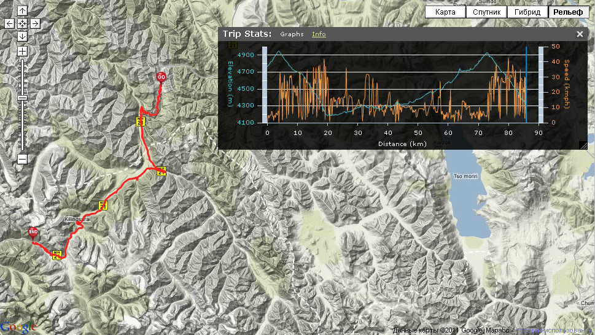
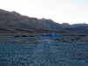 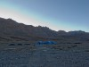 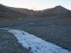 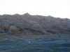 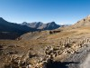 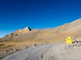 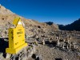 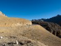 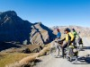 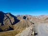 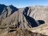 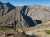 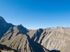 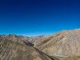  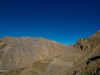 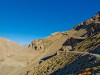 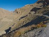 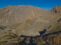 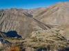 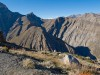 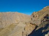 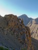 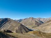 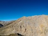 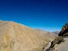 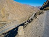 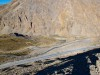 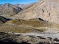 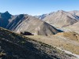 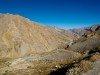 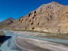 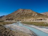 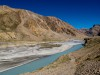 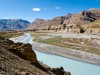 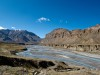 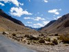 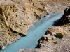 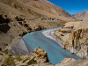 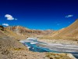 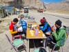 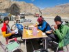 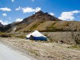 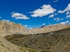 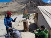 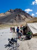 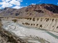 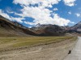 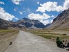 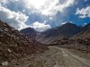
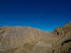 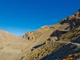 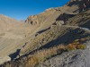 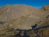 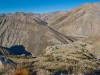 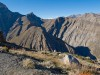 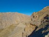 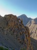 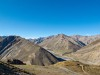 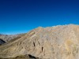 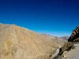 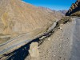 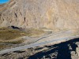 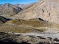 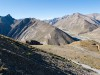 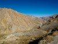 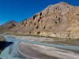 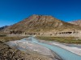 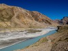 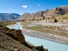 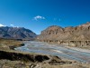 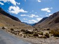 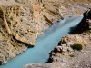 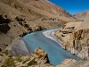 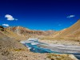 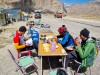 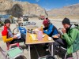 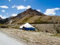 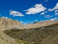 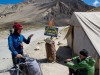 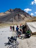 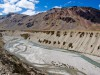 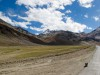 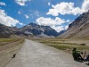 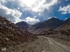